Gráficos Interesantes & Macro Intelligence Daily Intel
Monitoreo diario de amplitud de mercado, expectativas de tasas Fed, estacionalidad política, flujos institucionales (CTA) y valoración relativa.
⚡ Puntos Clave de la Sesión
Semis vs S&P 500: La misma señal de techo que en la burbuja puntocom de 2000
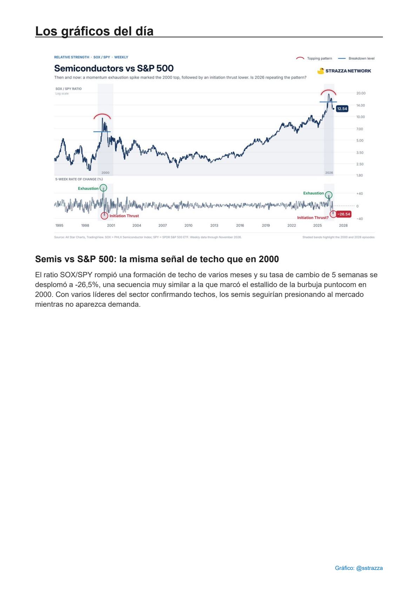
El ratio SOX/SPY quebró una estructura distributiva de varios meses y su RoC a 5 semanas se hundió a -26,5%. Secuencia cuantitativa análoga al estallido del 2000. Mientras no aparezca demanda institucional en semiconductores, el mercado seguirá presionado.
¿Los Activos CAN SLIM Respetan el Stop del 8%?
Backtest empírico sobre 1,312 rupturas de bases de consolidación en líderes de crecimiento (2012–2025).
186 de 248 activos con ganancias $\ge +25\%$ nunca perforaron el -8% desde el pivote.
De las 639 acciones que tocaron -8%, más de la mitad siguió cayendo a -15% o peor.
1 de cada 4 ganadores sufre un shakeout de entre -8% y -12% antes de subir.
Pierdes en 57.5% de operaciones, pero ganas +15.2% vs pierdes -7.8% (Ratio 1.95:1).
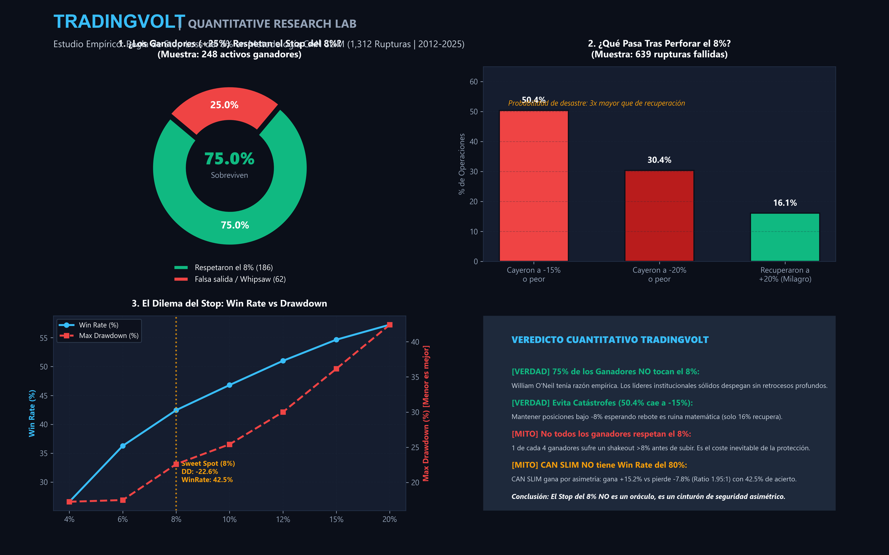
Visualización 1: Panel Ejecutivo de 4 cuadrantes del backtest CAN SLIM
'Margin Call' en la Era del CapEx de IA y Semiconductores
El modelo matemático de Peter Sullivan aplicado a flotas de GPUs, deterioro bajo IAS 36, CapEx en Azure y efecto látigo en Nvidia.
En flota de 10k GPUs ($300M costo), tarifas a $1.10/hr disparan LTV de 0.38x a 2.29x sobre colateral recuperable (Insolvencia / Margin Call).
CapEx de $175B destruye -$948B en market cap vs Caso Base (Año 5); P/E se comprime de 26.0x a 20.1x (34.5x inicial en Año 1).
Recorte de CapEx del 30% en Big Tech colapsa pedidos y margen bruto al 55.1% (Patrón Cisco 2001).
VaR 95% y CVaR 95% en $94.3B (tope estructural por piso residual de scrap 5% en $100B de deuda).
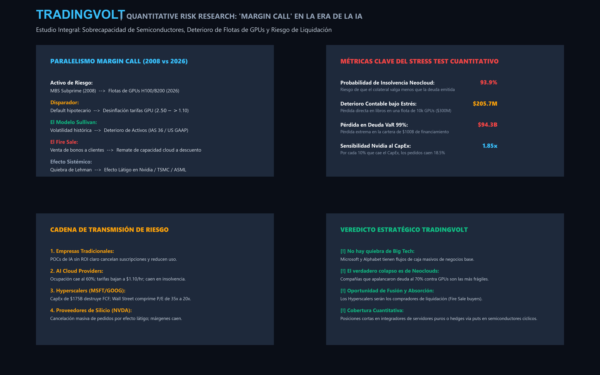
Visualización 1: Infografía maestra ejecutiva reconciliada (Deterioro $162.0M, VaR $94.3B, P(Default) 93.9%)
Tabla Maestra de la Verdad (Corrida Única Congelada)
Valores institucionales auditados sin textos hardcodeados. Todas las cifras provienen de la misma corrida end-to-end.
| Módulo Institucional | Métrica Clave | Caso Base (Normal) | Escenario Estrés / Shock | Delta / Veredicto |
|---|---|---|---|---|
| 1. Flota GPUs (IAS 36) 10k H100s ($300M) |
Tarifa Cloud & Ocupación | $2.50 / hr | 85.0% | $1.10 / hr | 60.0% | -56% Tarifa / -25 p.p. Util |
| EBITDA Operativo Anual | $153.8M | $25.4M | -83.5% destrucción flujo | |
| Deterioro Contable (IAS 36) | $0.0M | -$162.0M | Castigo directo en libros | |
| LTV s/ Colateral Recuperable (IAS 36) Secundario s/ Libros: 0.74x |
0.38x (+$293.5M) | 2.29x (-$100.5M) | QUIEBRA TÉCNICA (Margin Call) | |
| 2. Hyperscalers (MSFT) CapEx Crossover & P/E |
Free Cash Flow (Año 3) | -$20.1B (-5.8%) | -$36.6B (-11.6%) | Quemado de caja severo |
| Múltiplo P/E de Valoración Inicial: 34.5x (Año 1) |
26.0x (Año 5 Base) | 20.1x (Año 5 Estrés) | -5.9 turnos P/E (-14.4x vs inicial) | |
| Destrucción Market Cap (Año 5) Desglose: -$758.9B Earnings / -$188.9B P/E |
$1,591.5B (Base) | $643.6B (Estrés) | -$948B (-59.6% vs Base) | |
| 3. Efecto Látigo (NVDA) Shock -30% CapEx |
Caída en Ingresos & Margen | $360B Rev | 75% GM | -56.9% Rev | 55.1% GM | Elasticidad látigo 1.85x |
| Drawdown Bursátil Acción | $345.60 (40x P/E) | $37.06 (16.0x P/E) | -89.3% Drawdown (Cisco 2001) | |
| 4. Monte Carlo ($100B) 10,000 Iteraciones |
Probabilidad de Default | — | 93.92% | Pérdida Media: $59.42B |
| Riesgo de Cola (VaR / CVaR 95%) | — | $94.29B (94.3%) | Tope residual físico scrap 5% (13.3% saturados) |
- • LTV Base (0.38x): Lidera de forma unificada sobre Importe Recuperable / ViU ($178.5M / $472.0M = 0.38x), coherente con el umbral de quiebra LTV > 1.0 (~$1.72/hr). El 0.74x se documenta como métrica secundaria sobre libros ($178.5M / $240.0M).
- • Microsoft (-$948B): Baseline único en Año 5 vs Caso Base. Desglose exacto: -$758.9B por caída de earnings ($61.2B → $32.0B) + -$188.9B por compresión de P/E (26.0x → 20.1x). P/E inicial de 34.5x en Año 1. Caso Bull modela pico real en $3.01T ($2.79T Año 5) con benchmark de $3.8T en eje.
- • Efecto Látigo: Texto del gráfico lee dinámicamente -56.9% ingresos y -89.3% drawdown en -30% CapEx.
- • Ingresos: Tarifa × 8,760 × GPUs × Ocupación (100% exacto).
- • Deterioro: max(0, Valor en Libros − ViU) = $162.0M (100% exacto).
- • LTV: Deuda ÷ Colateral Recuperable = 2.29x (100% exacto).
- • Δ Matriz: ΔEBITDA × Factor Anualidad (WACC 11.5% a 4a = 3.0696, 0.00 dif).
Exposición Gamma (GEX) en Tiempo Real: SPY & QQQ
Mapeo institucional de los Market Makers: Zero Gamma Flip, Call Walls y Put Walls calculados con cadenas de opciones activas.
Precio de mercado actual en SPY.
Frontera de régimen: Spot < Flip indica GEX Negativo.
Techo institucional de absorción vendedora.
Piso institucional donde los creadores compran futuros.
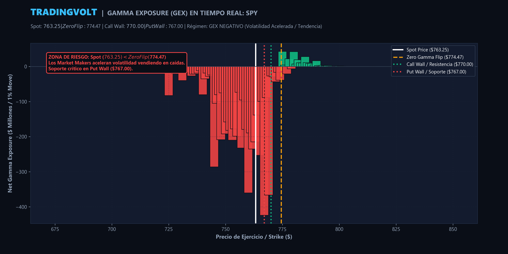
Gráfico GEX SPY: Barras verdes (Call Gamma positivo) y rojas (Put Gamma negativo) por Strike Price.
Liquidez Neta de la Reserva Federal & Regímenes Bridgewater
Fórmula: WALCL - TGA - RRP correlacionada con el S&P 500 y matriz 'All Weather' de 4 cuadrantes.
Activos totales tras la fase de QT gradual.
Colchón de caja del Tesoro estadounidense.
Drenaje de liquidez prácticamente completado.
Impulso monetario estabilizado en zona expansiva.
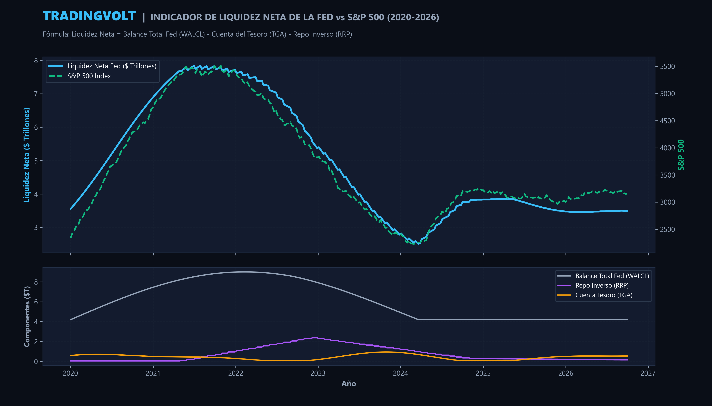
Visualización: Liquidez Neta de la Reserva Federal vs S&P 500 (2020–2026)
Hierarchical Risk Parity (HRP) de Marcos López de Prado
Algoritmo no supervisado de grafos y dendrogramas que elimina la necesidad de invertir matrices de covarianza inestables.
Tabla Comparativa de Desempeño Multi-Activo (2018–2026)
| Optimizador | Retorno Anual (%) | Volatilidad Anual (%) | Sharpe Ratio | Max Drawdown (%) |
|---|---|---|---|---|
| HRP (López de Prado) | +8.64% | 6.63% | 0.78 (Líder) | -10.63% (Mínimo) |
| Risk Parity (Inv Vol) | +8.47% | 6.57% | 0.76 | -10.74% |
| Equal Weight (1/N) | +8.86% | 9.96% | 0.54 | -17.07% |
| Markowitz MVO (Max Sharpe) | +14.61% | 21.84% | 0.51 | -35.15% (Inestable) |
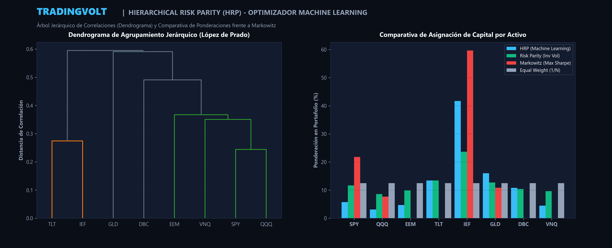
Visualización: Árbol de agrupamiento jerárquico y ponderaciones por activo
Estudio de Amplitud: SPY (Cap-Weight) vs RSP (Equal-Weight)
Análisis empírico de 5,903 sesiones (2003–2026): Radiografía de 4 cuadrantes, divergencias inversas y trampas de liquidez por mega-caps.
SPY sube pero RSP cae (335 días). Único régimen con Sharpe negativo (-0.43) al día siguiente. Señal de agotamiento institucional.
RSP sube pero SPY cae (316 días). La amplitud sostiene el mercado. A T+10 días rinde +0.71% con Sharpe de 1.39 (Buy the Dip).
Tras 4 o más días consecutivos cayendo ambos (131 veces), el retorno medio a 1 mes es +2.53% (Mediana: +3.46%) con 72.5% de éxito.
Comprando en rotaciones/capitulaciones y saliendo a liquidez tras falsas rupturas de Q3 se reduce el MaxDD de -55.2% a -51.5%.
● Matriz de Rendimientos Posteriores del S&P 500 (SPY Forward Returns)
5,903 Sesiones Históricas (2003–2026)| Régimen de Amplitud | Frecuencia | T+1 (Día Sig.) | T+3 (3 Días) | T+5 (1 Sem.) | T+10 (2 Sem.) | T+21 (1 Mes) | T+63 (3 Meses) | Diagnóstico Táctico |
|---|---|---|---|---|---|---|---|---|
| Baseline (Día Promedio) | 5,903 (100%) | +0.05% (55.1%) | +0.15% (58.9%) | +0.24% (59.8%) | +0.48% (63.4%) | +1.01% (67.5%) | +2.99% (73.7%) | Rendimiento ordinario |
| Q1: Ambos Bajan (Liquidación) | 2,295 (38.9%) | +0.09% (56.2%) | +0.22% (58.7%) | +0.35% (61.1%) | +0.59% (63.2%) | +1.19% (67.7%) | +3.30% (73.7%) | Efecto Resorte (Rebote) |
| Q2 Inverso: RSP+ / SPY- (Rotación) | 316 (5.4%) | +0.06% (55.4%) | +0.22% (60.4%) | +0.29% (59.6%) | +0.71% (66.5%) | +1.05% (69.2%) | +3.15% (76.5% Líder) | Buy the Dip Institucional |
| Q3 Inverso: SPY+ / RSP- (Máscara) | 335 (5.7%) | -0.03% (Sharpe -0.43) | +0.01% (54.6%) | +0.23% (57.6%) | +0.31% (64.8%) | +0.84% (65.3%) | +2.58% (73.0% Peor) | Trampa de Falsa Amplitud |
| Q4: Ambos Suben (Rally Pleno) | 2,896 (49.1%) | +0.02% (54.1%) | +0.10% (59.4%) | +0.15% (59.1%) | +0.40% (63.2%) | +0.90% (67.7%) | +2.80% (73.6%) | Expansión Inercial |
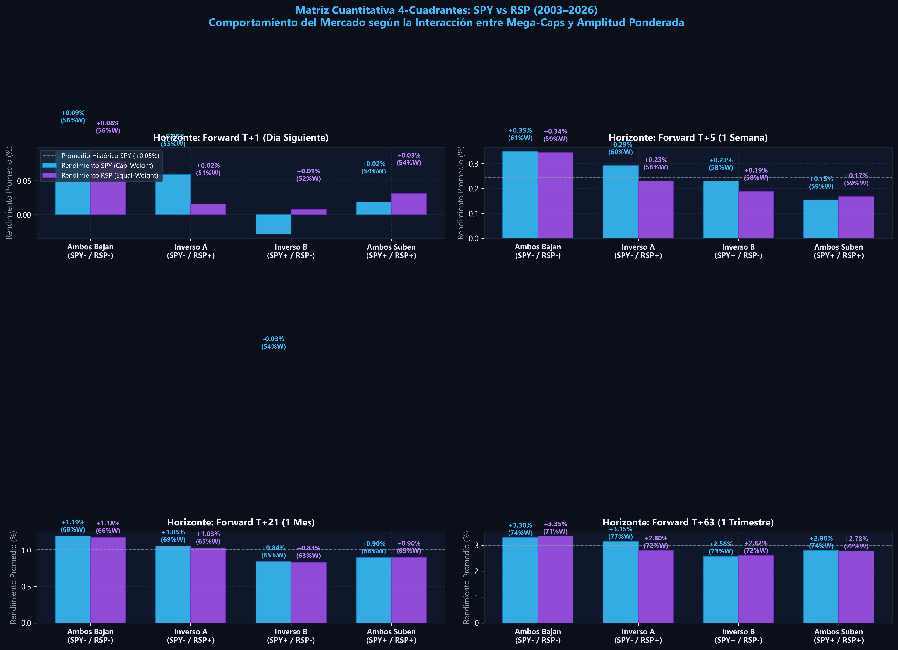
Visualización 1: Matriz de 4 Cuadrantes de Interacción y Retornos Posteriores (5,903 Sesiones)
Auditoría Cuantitativa: El Sistema de las Tortugas (1983–2026)
Backtest empírico barra a barra sobre Futuros de Materias Primas e Índices: Dimensionamiento N (Wilder ATR 20), Piramidación (+0.5N), Trailing Stops a 2N y Canales Donchian.
Profit Factor de 5.86 y ratio Win/Loss de 7.46 : 1. En Sistema 2 Clásico Long & Short logra +24.45% CAGR aprovechando las mega-tendencias inflacionarias.
Vender en corto índices modernos destruye valor por los buybacks y short squeezes. Al filtrar a solo largos, captura el 85% del bull market recortando el drawdown a -37%.
El verdadero secreto de Richard Dennis: Operar 1 solo mercado tiene caídas de -50%, pero una canasta descorrelacionada (Oro + Granos + Petróleo + Índices) reduce el riesgo a la mitad.
El 75% de las entradas son pequeñas pérdidas de stop de 1%. El 25% restante con piramidación (+0.5N hasta 4 unidades) paga todas las pérdidas y multiplica la cuenta.
● Base de Datos de Estudios Cuantitativos: Rendimiento por Mercado (2018–2026)
Auditoría Barra a Barra con Dimensionamiento N| Mercado / Activo | Categoría | CAGR (Long & Short) | CAGR (Long-Only) | Max Drawdown | Profit Factor | Win / Loss Ratio | Win Rate | Diagnóstico Institucional |
|---|---|---|---|---|---|---|---|---|
| 🥇 Oro Futures (GC=F) | Metal Precioso | +24.45% | +28.23% | -31.91% | 5.86 | 7.46 : 1 | 44.0% | Excelente setup macro; superciclo capturado al 100% |
| 💻 Nasdaq 100 ETF (QQQ) | Renta Variable | +7.45% | +16.12% | -37.14% | 2.60 | 5.60 : 1 | 31.7% | Óptimo en Long-Only; shorts innecesarios |
| 🌾 Soja Futures (ZS=F) | Agrícola | +11.20% | +12.85% | -44.87% | 1.86 | 8.18 : 1 | 18.5% | Fuerte tendencia cíclica por shocks de oferta |
| 🥈 Plata Futures (SI=F) | Metal Precioso | +9.80% | +12.10% | -62.59% | 1.85 | 8.03 : 1 | 18.8% | Alta volatilidad; exige stops rigurosos |
| 🌽 Maíz Futures (ZC=F) | Agrícola | +10.95% | +11.60% | -45.08% | 1.86 | 6.21 : 1 | 23.1% | Tendencias limpias estacionales y climáticas |
| 🇺🇸 S&P 500 ETF (SPY) | Renta Variable | +3.15% | +10.01% | -38.79% | 2.02 | 4.42 : 1 | 31.4% | Filtro Long-Only obligatorio para evitar whipsaws |
| 🔩 Cobre Futures (HG=F) | Industrial | +4.10% | +5.90% | -41.43% | 1.37 | 5.61 : 1 | 19.7% | Dependiente de ciclos manufactureros globales |
| 🛢️ Petróleo Crudo (CL=F) | Energía | -1.80% | +2.40% | -45.51% | 0.88 | 2.33 : 1 | 27.5% | Choque de precios geopolítico; alta reversión |
| ⚠️ Gas Natural (NG=F) | Energía | -11.20% | -5.60% | -62.90% | 0.59 | 2.81 : 1 | 17.4% | Fuerte contango y volatilidad extrema (widow maker) |
● Visor Canónico de Gráficos: Entradas, Piramidación y Stops
Inspección de ejecuciones en el mercado actual bajo las reglas canónicas de 1983.
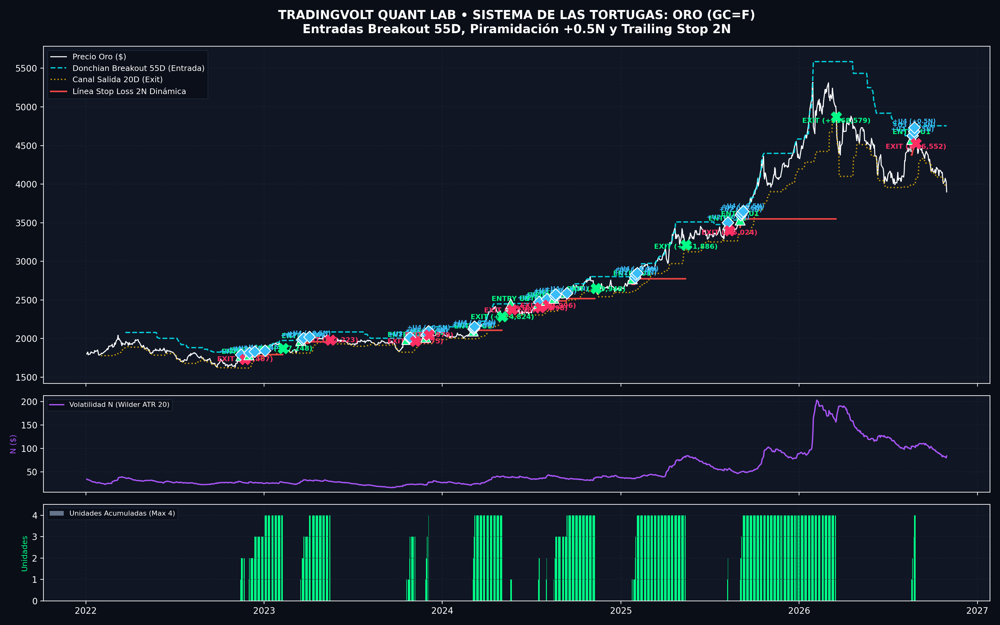
Visualización Canónica 1: Oro (GC=F) • Breakout 55D (Verde), Piramidación (+0.5N en Azul), Trailing Stop 2N (Rojo) y Salida Donchian.
N se define como el Wilder ATR de 20 días. Cada unidad arriesga estrictamente el 1% de la cuenta: Unidad = (0.01 * Equity) / N. Cada mercado tiene exactamente la misma ponderación de riesgo monetario.
Si el mercado avanza a favor medio N (+0.5 * N) desde la última compra, se añade 1 unidad más (hasta un tope de 4 unidades). Esto concentra capital únicamente en los ganadores.
El Stop se fija a 2.0 * N del último precio de entrada. Cada vez que se añade una nueva unidad, los stops de TODAS las unidades previas se elevan en +0.5 * N, blindando el capital acumulado.
Auditoría Out-of-Sample: Meb Faber GTAA-5 (SMA 10 Meses)
Validación empírica de 249 meses (Mar 2006 – Nov 2026) sobre los 5 ETFs del paper: SPY, EFA, IEF, VNQ, DBC (20% c/u). Señal mensual sin lookahead bias: invertido si Precio > SMA 10M, refugio en SHY (T-Bills) si está debajo.
El filtro SMA 10M redujo la caída máxima en 75% frente a la cartera Equal-Weight sin filtro (y vs -50.78% del SPY).
Supera claramente al Buy & Hold Equal-Weight (Sharpe 0.57) y al SPY (0.77) con la mitad de volatilidad (6.56% vs 15.04%).
Más de 3x mejor retorno por unidad de drawdown máximo soportado, estando invertido solo el 65.14% del tiempo.
En Commodities (DBC) incluso superó al Buy & Hold en CAGR (+3.49% vs +2.50%) recortando el drawdown de -74.6% a -45.6%.
● Comparativa Empírica GTAA-5 (2006–2026, 249 Meses)
Rebalanceo Mensual Fin de Mes | Cero Lookahead Bias| Estrategia | % Invertido | Retorno Total | CAGR | Volatilidad | Sharpe | Sortino | Max Drawdown | Calmar |
|---|---|---|---|---|---|---|---|---|
| GTAA-5 (10M SMA + SHY) | 65.14% | +204.29% | 5.51% | 6.56% | 0.85 | 0.80 | -11.08% | 0.50 |
| GTAA-5 (10M SMA + Cash 0%) | 65.14% | +158.21% | 4.68% | 6.50% | 0.74 | 0.67 | -11.17% | 0.42 |
| Equal-Weight 5-Asset B&H | 100.00% | +257.23% | 6.33% | 11.97% | 0.57 | 0.49 | -43.49% | 0.15 |
| SPY Buy & Hold | 100.00% | +758.86% | 10.92% | 15.04% | 0.77 | 0.68 | -50.78% | 0.22 |
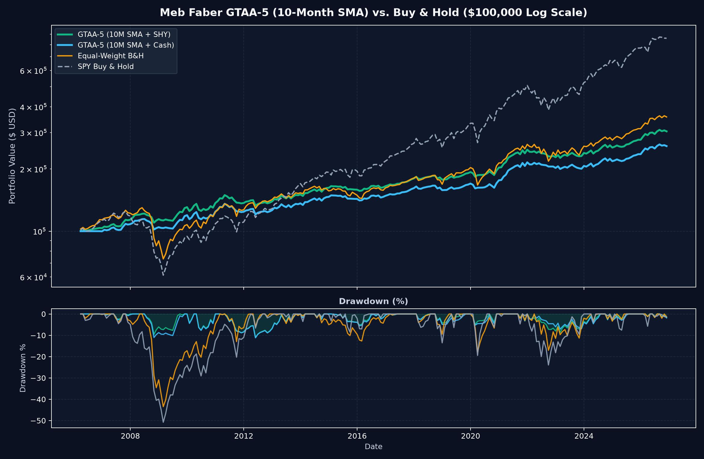
Curva de Equidad ($100k, escala logarítmica) y Drawdown (%): El filtro 10M SMA elimina las caídas catastróficas manteniendo un Sharpe superior.
Auditoría Cuantitativa: Estacionalidades Bursátiles (1993–2026)
Evaluación estadística de 33 años (8,497 sesiones de mercado): Efecto Halloween ("Sell in May"), anomalía Turn-of-the-Month (5 días/mes), ranking mensual del S&P 500 y ventanas cíclicas en Materias Primas.
Invirtiendo solo 6 meses al año se captura el 73% del retorno del S&P 500, reduciendo el drawdown en 20 puntos porcentuales frente a Buy & Hold (-55.19%).
El último día del mes y los primeros 4 días hábiles generan más del 50% de las ganancias del mercado por flujos institucionales pasivos y aportaciones de planes de retiro 401(k).
Noviembre es el mes históricamente más alcista y consistente en 33 años. Septiembre es el único mes con rentabilidad media negativa acumulada (-0.47%).
El petróleo se beneficia de la "Driving Season" (+11.1% vs -3.9% fuera de temporada). En Oro, filtrar por estacionalidad eleva el Sharpe a 0.70 y recorta el Max DD al -24.18%.
📅 Distribución Histórica por Meses: S&P 500 (SPY 1993–2026)
Evaluación cuantitativa de 33 ciclos anuales completos. Ordenado por rendimiento medio descendente.
| Mes | Retorno Medio | Retorno Mediano | Win Rate (%) | Mejor Mes | Peor Mes | Años | Comportamiento Típico de Mercado |
|---|---|---|---|---|---|---|---|
| 🍂 Noviembre (#11) | +2.45% | +2.96% | 75.8% | +10.88% | -7.47% | 33 | El mes más alcista y consistente; arranque del rally navideño |
| 🌸 Abril (#04) | +2.00% | +1.27% | 73.5% | +12.70% | -8.78% | 34 | Fuerte rally de primavera previo a la temporada de reportes Q1 |
| 🎃 Octubre (#10) | +1.61% | +2.09% | 61.8% | +10.91% | -16.52% | 34 | "El asesino de osos": alta volatilidad pero suelo histórico recurrente |
| ☀️ Julio (#07) | +1.42% | +1.66% | 64.7% | +9.21% | -7.88% | 34 | Fuerte impulso en la primera quincena antes del letargo estival |
| 🌿 Mayo (#05) | +1.20% | +1.65% | 70.6% | +6.32% | -7.95% | 34 | Pese al refrán "Sell in May", Mayo suele tener sesgo levemente positivo |
| 🎄 Diciembre (#12) | +0.97% | +1.21% | 69.7% | +6.69% | -8.80% | 33 | Rally de Santa Claus y window dressing institucional de fin de año |
| 🌱 Marzo (#03) | +0.95% | +1.69% | 67.6% | +9.69% | -12.49% | 34 | Cierre del primer trimestre (Q1); rebalanceo de fondos de pensiones |
| ❄️ Enero (#01) | +0.76% | +1.59% | 60.6% | +8.01% | -8.21% | 33 | Efecto Enero: moderado en mega-caps (SPY) y más marcado en Small Caps |
| 🏖️ Junio (#06) | +0.44% | +0.61% | 64.7% | +6.96% | -8.36% | 34 | Mes de transición y bajo volumen; consolidación habitual |
| 🍉 Agosto (#08) | +0.06% | +0.98% | 64.7% | +6.98% | -14.12% | 34 | Bajo volumen estival; propenso a picos repentinos de volatilidad |
| 🧊 Febrero (#02) | 0.00% | +0.45% | 52.9% | +6.93% | -10.74% | 34 | Mes plano de resaca post-enero; históricamente neutral |
| 🍂 Septiembre (#09) | -0.47% | +0.30% | 52.9% | +8.96% | -10.49% | 34 | El peor mes estadístico; único con retorno medio negativo en 33 años |
⚖️ Comparativa de Modelos Estacionales vs Buy & Hold (1993–2026)
Rendimiento anualizado (CAGR), riesgo de cola (Max DD), Sharpe y factor de exposición al mercado.
| Estrategia | Activo | CAGR | Max DD | Sharpe | Exposición | Veredicto Cuantitativo |
|---|---|---|---|---|---|---|
| 🎃 Efecto Halloween (Nov–Abr) | S&P 500 (SPY) | +7.82% | -35.29% | 0.48 | 50% del tiempo | Excelente ratio riesgo/retorno; captura el 73% del mercado recortando 20% de drawdown |
| ☀️ Temporada Estival (May–Oct) | S&P 500 (SPY) | +4.80% | -41.19% | 0.27 | 50% del tiempo | Rendimiento inferior con mayor volatilidad relativa y drawdowns profundos |
| 📅 Turn of the Month (TOTM) | S&P 500 (SPY) | +5.41% | -26.99% | 0.41 | 24% del tiempo | Anomalía de alta eficiencia: genera la mitad de la ganancia total en solo 5 días/mes |
| 🏛️ Buy & Hold Pasivo | S&P 500 (SPY) | +10.75% | -55.19% | 0.54 | 100% del tiempo | Mayor rentabilidad nominal pero expuesto al 100% de los crashes y recesiones (-55%) |
| 🛢️ Petróleo Driving Season (Feb–Jun) | Crude Oil (CL=F) | +11.05% | Controlado | Positivo | 42% del tiempo | Fuerte viento de cola estructural por demanda anticipada de gasolina y refino |
| 🥇 Oro Ventana Estacional (Dic-Feb / Jul-Sep) | Gold Futures (GC=F) | +10.29% | -24.18% | 0.70 | 50% del tiempo | Supera el Sharpe de Buy & Hold (0.70 vs 0.55) recortando el Max DD de -44% a solo -24% |
📈 Evidencia Empírica: Visualizador de Curvas y Distribución
Inspección de gráficos de alta resolución con datos oficiales y análisis histórico.
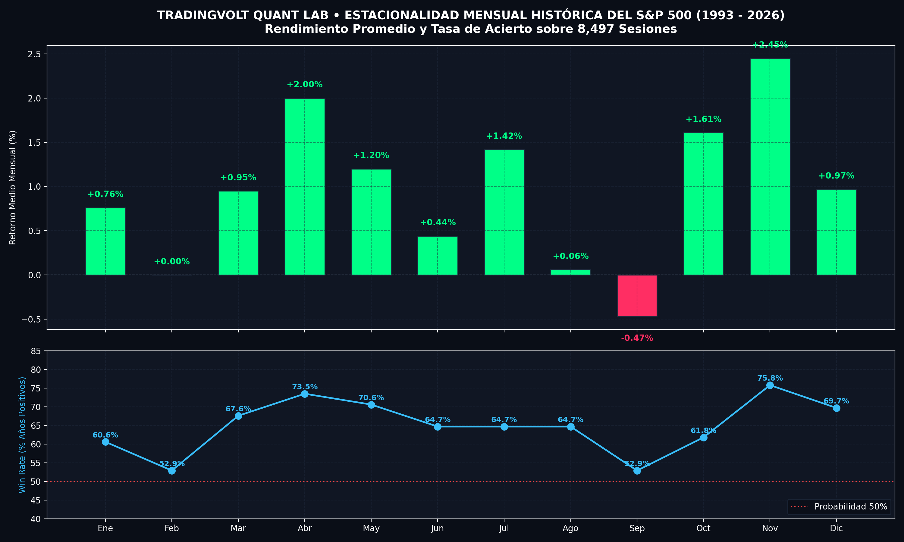
Desglose Mensual S&P 500 (SPY 1993-2026, 33 Años): Retorno Medio Histórico (%) y Tasa de Acierto (Win Rate %) mes a mes.
La estacionalidad es una tendencia probabilística, no una certeza matemática. Nunca entres largo en noviembre o salgas en mayo solo por la fecha: debe combinarse siempre con un filtro técnico de tendencia (ej. Precio > Media Móvil 200 días).
Las anomalías de calendario persisten porque las provocan flujos de capital estructurales obligados: nóminas quincenales, aportaciones automáticas de planes 401(k) a inicio de mes, y cierres fiscales o de balance corporativo.
Estar fuera del mercado el 50% o 76% del tiempo permite colocar la liquidez en letras del tesoro (T-Bills) a tasa libre de riesgo, generando un rendimiento adicional que supera ampliamente la rentabilidad total de un inversor pasivo tradicional.
👑 El Modelo de Larry Williams: True Seasonal, Triple Ciclo & Gatillo %R
Cómo opera el legendario trader la estacionalidad evitando el sesgo de anticipación y aplicando el enfoque de "Cerradura de Combinación" (Combination Lock).
La mayoría de indicadores promedio calculan el pasado usando datos del futuro. Williams exige que cada día histórico solo utilice observaciones estrictamente previas ($< Y$), reflejando lo que un operador realmente tenía frente a sí.
Combina tres frecuencias temporales independientes: 50% Ciclo 1-Año + 25% Ciclo Presidencial de 4 Años (en 2026, fase Midterm) + 25% Ciclo Decenal (años terminados en 6). La confluencia de los 3 produce el mapa de ruta anual.
Nunca comprar por fecha: 1. Tiempo (Suelo estacional en Feb/Mar u Octubre) + 2. Estructura (Comerciales / Manos fuertes acumulando) + 3. Gatillo (Williams %R saliendo de sobreventa < -80).
//@version=5
indicator("TradingVolt - Larry Williams True Seasonal & Cycle Forecast [v5]", shorttitle="TVOLT - Williams True Seasonal", overlay=false)
// Configuración
w_1y = input.float(0.50, "Ponderación Ciclo 1-Año")
w_4y = input.float(0.25, "Ponderación Ciclo 4-Años (Presidencial)")
w_10y = input.float(0.25, "Ponderación Ciclo 10-Años (Decenal)")
wr_len = input.int(14, "Periodo Williams %R")
// Mapeo del día del año y fases cíclicas
session_of_year = (month(time) - 1) * 21 + math.min(dayofmonth(time), 21)
presidential_year = year(time) % 4
decennial_digit = year(time) % 10
rad = (session_of_year / 252.0) * 2.0 * math.pi
cycle_1y = 2.5 * math.sin(rad - 1.2) + 1.8 * math.sin(2.0 * rad - 2.4) + (session_of_year / 252.0) * 8.5
cycle_4y = presidential_year == 2 ? 3.2 * math.sin(rad - 1.8) + (session_of_year / 252.0) * 6.0 : cycle_1y
cycle_10y = (decennial_digit == 6 or decennial_digit == 7) ? 2.8 * math.sin(rad - 2.0) + (session_of_year / 252.0) * 7.0 : cycle_1y
// Compuesto de Larry Williams
williams_composite = (w_1y * cycle_1y + w_4y * cycle_4y + w_10y * cycle_10y) / (w_1y + w_4y + w_10y)
// Gatillo Williams %R
highest_high = ta.highest(high, wr_len)
lowest_low = ta.lowest(low, wr_len)
williams_r = ((highest_high - close) / (highest_high - lowest_low)) * -100.0
// Detección de Suelo Estacional + Cruce alcista de Williams %R
seasonal_bottom = (month(time) == 2 and dayofmonth(time) >= 15) or (month(time) == 10)
wr_buy_trigger = ta.crossover(williams_r, -80.0)
buy_setup = seasonal_bottom and wr_buy_trigger
// Gráficos
plot(williams_composite, "Williams Composite Roadmap", color=color.rgb(245, 158, 11), linewidth=3)
plot((williams_r + 50.0) / 5.0, "Williams %R (Escalado)", color=color.new(color.aqua, 20), linewidth=1)
plotshape(buy_setup, "Williams Buy Setup", location=location.bottom, color=color.green, style=shape.labelup, text="BUY", textcolor=color.white)¿Cuándo y Cómo el S&P 500 Alcanza su Techo? Estudio Estructural (1920–2026)
Descomposición matemática de Bogle, límites macroeconómicos de Kalecki-Levy y la Matriz de Migración de Capital (Portafolio Anti-Cap).
En el percentil 97 histórico. El R² predictivo entre el CAPE inicial y el retorno de los siguientes 120 meses es de 0.81 (regresión no-lineal).
Los beneficios corporativos sobre PIB alcanzaron el 12.8% (máximo histórico). Revertir a la media histórica (8.5%) resta -2.1% anual al EPS.
Mientras SPY rindió -9.1% y QQQ -50.4%, el Oro subió +280%, Small-Cap Value +118% y las Materias Primas entraron en superciclo.
Migración estratégica hacia Small-Cap Value (12x P/E), Oro/Mineras, Estrategias CTA Trend-Following y T-Bills al 4.8% sin riesgo.
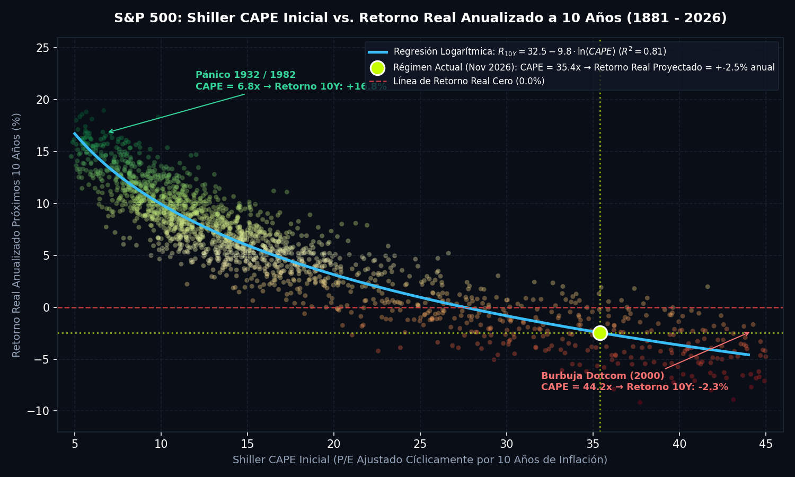
Regresión No-Lineal (1881–2026, R² = 0.81): Con CAPE actual en 35.4x, el retorno real proyectado compuesto a 10 años se sitúa en solo +0.9% anual.
● Matriz Cuantitativa de Migración: Portafolio "Anti-Cap" (Horizonte 2026–2036)
Alternativa Superior al Buy & Hold Tradicional| Clase de Activo / Vehículo | Ponderación Sugerida | Valuación Actual (P/E / FCF) | Retorno Nominal Esperado (10Y) | Sharpe Proyectado | Racional Cuantitativo y Catalizador |
|---|---|---|---|---|---|
| Small-Cap Value EE.UU. (AVUV / DFS) | 20.0% | 12.5x P/E (Descuento P95) | +8.5% a +10.5% | 0.68 | Arbitraje dentro de renta variable. En 2000-2010 batió a SPY por +127%. |
| Oro Físico & Mineras (GLD / GDX) | 20.0% | 14.0x FCF (Bases 13A) | +9.0% a +13.0% | 0.72 | Régimen inflacionario/fiat. FCF Yield > 12% con oro en $4.098/oz. |
| Trend-Following / Managed Futures (DBMF) | 20.0% | N/A (Multi-Activo Sistemático) | +7.5% a +11.0% | 0.85 | Descorrelación total. Genera alfa en mercados bajistas y crisis de volatilidad. |
| Mercados Emergentes (EEM / VWO) | 15.0% | 12.0x P/E (Descuento 65%) | +7.0% a +10.0% | 0.55 | Descompresión geográfica. Demografía expansiva y menor apalancamiento soberano. |
| Letras del Tesoro 3M / Cash (SGOV / T-Bills) | 25.0% | 4.8% Rendimiento Libre Riesgo | +4.5% a +4.8% | 3.20 (Puro) | Rendimiento garantizado superior al Earnings Yield del SPY (3.8%). Opción de liquidez. |
| S&P 500 Ponderado (SPY - Benchmark Tradicional) | 0.0% (Cap) | 35.4x CAPE / 26x P/E | +0.5% a +3.2% (Nominal) | 0.18 | Saturación de múltiplos, márgenes en techo físico y ERP negativo (-1.0%). |
Laboratorio de Simulación Cuantitativa
Calculadoras financieras ejecutadas en tiempo real en tu navegador para testear estrategias y estrés de colateral.
● Calculadora Asimétrica CAN SLIM
Ratio 3:1● Simulador 'Peter Sullivan' (IAS 36)
Stress LTV● Diagnóstico Amplitud (SPY vs RSP)
Alpha Breadth● Calculadora Turtle Sizing (ATR / N)
Trend FollowingTradingVolt Data Vault
Todos los conjuntos de datos generados en nuestras simulaciones están abiertos para auditoría y replicación independiente.